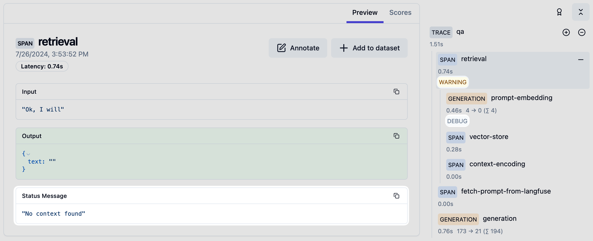

모델이 어떤 도구를 골랐는지, 서버가 어떤 값으로 실행했는지, 어느 단계에서 멈췄는지를 구분해 확인합니다. 아래 관측 이름과 메타데이터는 이 가이드의 기준 커밋에 해당합니다. 배포 버전이 다르면 먼저 해당 실행의 버전을 확인하세요.
문제가 발생한 실행 찾기
-
재현 시각과 시간대, 배포 환경, 플로우 이름, 대화 ID를 기록합니다. Trace ID가 있다면 함께 기록하세요.
-
Langfuse에서 해당 배포가 전송하는 프로젝트를 열고 Traces의 시간 범위를 재현 시각으로 좁힙니다. 환경을 기록하는 배포라면 Environment도 맞춥니다.
-
Trace ID로 실행을 찾습니다. ID가 없다면 시간과 플로우 이름으로 후보를 찾고 Input과 대화 문맥을 대조합니다. Session ID가 기록된 실행은 Sessions에서 이전·이후 턴을 함께 볼 수 있습니다.
-
실행을 열고 관측 트리에서 모델 호출과 업무 도구를 순서대로 선택합니다. 각 단계의 Input, Output, Metadata, Level, Status Message를 확인하세요.
Flowise가 독립 trace를 만들 때는 chatId를 sessionId로 설정합니다. 상위 서비스의 trace에 합류할 때는 상위 trace 속성을 덮어쓰지 않으므로, Session ID가 항상 Flowise 대화 ID와 같다고 가정하지 마세요. Langfuse의 trace와 session 개념 · Sessions 사용법.
화면에서 확인할 위치

Langfuse 공식 문서의 예제 화면입니다. 오른쪽 관측 트리에서 단계를 고르면 왼쪽 Input·Output·Status Message로 상세 내용을 확인할 수 있습니다. 위 예제의 retrieval과 WARNING은 화면 설명용이며 GenOS 실행 데이터가 아닙니다. 설치된 Langfuse 버전에 따라 배치는 다를 수 있습니다. 이미지 출처와 로그 수준 설명.
genos-chain의 다음 도구 확인하기
후속 업무 도구 이름을 찾고 Metadata의 invocation_origin: "genos_chain"을 확인합니다. Input은 경로 참조·Vault 복원·해당 MCP 스키마의 qvo 감싸기 등을 거친 실제 호출 인자입니다. 모델의 tool call 인자와 다를 수 있으므로 서버가 실행한 단계의 Input을 기준으로 비교하세요.
계좌 선택 예제에서는 조회 도구의 Output에서 후보 행을 확인하고, 승인 뒤 use_account의 Input에 선택한 행의 account가 들어갔는지 봅니다. 거절·취소했다면 후속 업무 호출이 실행되지 않았는지 확인합니다. 카드의 선택값과 체크포인트는 실행 이력도 함께 대조하세요. Langfuse의 도구 span 하나만으로 사용자 카드의 표시나 클릭까지 입증할 수는 없습니다.
GENOS_CHAIN_INVALID 피드백이 있으면 선언 오류와 마지막으로 완료된 업무 호출을 분리해 봅니다. 후속 단계 오류를 해결하려고 이미 완료된 업무 도구를 다시 호출하지 마세요. 최종 성공은 마지막 업무 결과와 사용자에게 전달된 결과까지 확인해야 합니다.
genos-vault의 복원 전후 비교하기
<도구 이름> · Vault 인자 복원 단계를 찾으세요. Metadata의 stage: "vault_argument_resolution"과 resolution_status로 복원 단계와 성공·실패를 구분합니다.
| 확인할 항목 | 읽는 방법 |
|---|---|
Input의 agent_arguments |
모델 또는 체인이 보낸 참조 포함 인자 |
Input의 resolved_arguments |
서버가 복원한 인자. 실패 시 null일 수 있음 |
Output의 references |
성공한 복원에서 처리한 참조 수 |
Metadata의 resolution_status |
resolved 또는 failed |
실패 시 error_code와 tool_executed: false |
복원 실패로 업무 도구가 실행되지 않은 경우 |
vault_snapshot_status와 스냅샷 단계 |
진단용 스냅샷의 저장 상태. 업무 호출 성공과 별도로 확인 |
큰 복원 본문은 <도구 이름> · Vault 스냅샷 아래 여러 관측으로 나뉠 수 있습니다. 복원 단계에 원문 전체가 보이지 않으면 하위 스냅샷과 상태를 확인하세요. 로그 보호 설정에 따라 Input·Output이 마스킹되거나 암호화되어 보일 수 있습니다. 빈 화면만으로 값이 없었다고 판단하거나, 확인을 위해 로그 보호를 끄지 마세요.
데모의 잔액 참조를 사용했다면 agent_arguments에는 {{$vault.CUSTOMER_a0000000-0000-4000-8000-000000000001.balance}}, resolved_arguments에는 숫자 120000이 대응하는지 비교합니다. 실제 실행에서는 그 실행이 발급한 참조를 사용하세요. 복원 실패라면 오류 경로와 코드를 보고 수정하며, 업무 도구 재실행을 복원 점검의 대용으로 삼지 않습니다.
genos-slots의 검증과 확정 확인하기
후보 조회 → 검증도구 → slot_fill → 입구도구 순서로 봅니다. 이 가이드의 예제라면 lookup_accounts, verify_account, slot_fill, verify_amount, slot_fill, prepare_transfer를 확인합니다.
검증도구 Output의 payload.mcpSuccess와 그 직전 Input을 확인한 뒤, slot_fill의 결과를 대조하세요. 검증 성공과 슬롯 확정은 다른 단계입니다. 계좌를 다시 검증한 뒤라면 금액에 대해 새 검증과 확정이 있었는지도 확인해야 합니다.
슬롯 입구도구의 Metadata에는 invocation_origin: "genos_slot", tool_call_id, node_id가 기록됩니다. Input은 서버가 확정된 슬롯과 입력포맷으로 구성한 인자이며 모델이 제안한 인자와 다를 수 있습니다. 화면의 실행 이력은 마스킹된 값을 사용할 수 있으므로, 로그 보호가 적용된 Langfuse 입력과 표시 모양이 같아야 한다고 가정하지 마세요. 체인에서 입구도구를 호출했다면 호출 출처는 genos_chain으로 표시됩니다.
SLOTS_INCOMPLETE라면 피드백의 missing과 unvalidated를 확인해 어느 슬롯의 값 또는 최신 검증 근거가 부족한지 찾습니다. 이 경우를 실제 입구도구 실행 실패와 구분하려면 업무 도구의 실행 여부도 확인해야 합니다.
오류와 대기와 재개 구분하기
관측의 ERROR와 Status Message를 먼저 보고, 이어서 Output의 업무 성공·실패 필드를 확인합니다. 기준 코드의 도구 오류 처리기는 Tool execution failed를 기록하지만, 도구가 예외 없이 반환한 업무 실패 JSON까지 항상 ERROR가 되는 것은 아닙니다. 부모 단계가 정상으로 보여도 실패한 자식과 최종 결과를 함께 확인하세요.
사용자 응답 대기는 업무 실패와 다릅니다. 최초 실행에서 멈춘 위치와 재개 실행의 Trace ID·Session ID·부모 관측 연결을 대조하고, 승인·거절·취소 이후에 실행된 도구를 확인하세요. 위임이 있었다면 실제 MonimoAgent의 위임 호출, A2A 처리, 자식 도구, 부모의 종료까지 따라갑니다. 직접 A2A 노드 호출만으로 같은 경로를 확인했다고 판단하지 않습니다.
카드 질문이 의도와 다르면 request_user_input.question과 실제 표시를 비교하세요. assistant 본문과 별도 reasoning 데이터는 질문과 구분해서 확인합니다. 디버깅용 설명을 질문에 이어 붙이거나 실행 응답 전체로 질문을 대체하지 않습니다.
문제를 전달할 때는 배포 버전, 재현 시각·시간대, Trace URL과 관측 ID, 기대 결과, 실제 결과, 최초·재개 여부, 이미 완료된 업무 호출을 함께 남기세요. 원문 개인정보나 비밀값 대신 승인된 보호 로그와 식별자를 사용합니다.
실행이 보이지 않을 때
시간 범위·프로젝트·배포 환경을 먼저 확인하고, 이후 Flowise의 추적 설정과 전송 실패 로그를 확인합니다. 기준 코드의 전역 환경변수 경로는 LANGFUSE_ENABLED=true와 LANGFUSE_SECRET_KEY, LANGFUSE_PUBLIC_KEY, LANGFUSE_BASE_URL이 모두 있어야 활성화됩니다. 플로우별 Analytics 설정도 지원하므로 실제 사용 중인 경로를 확인하세요. 키 값 자체를 문서나 화면 캡처에 붙이지 않습니다.
상위 서비스와 Flowise trace가 갈라진다면 전달된 trace 문맥과 부모 관측 연결을 확인하세요. SDK가 전송을 시도한 것과 Langfuse에 관측이 저장된 것은 다릅니다. Langfuse에서 해당 Trace ID의 실제 관측이 조회되는지까지 확인해야 합니다.
기준 코드의 trace 생성과 도구 기록 · 체인과 슬롯 실행 · Vault 복원 기록 · 내부 도구 기록 · 전역 추적 설정.